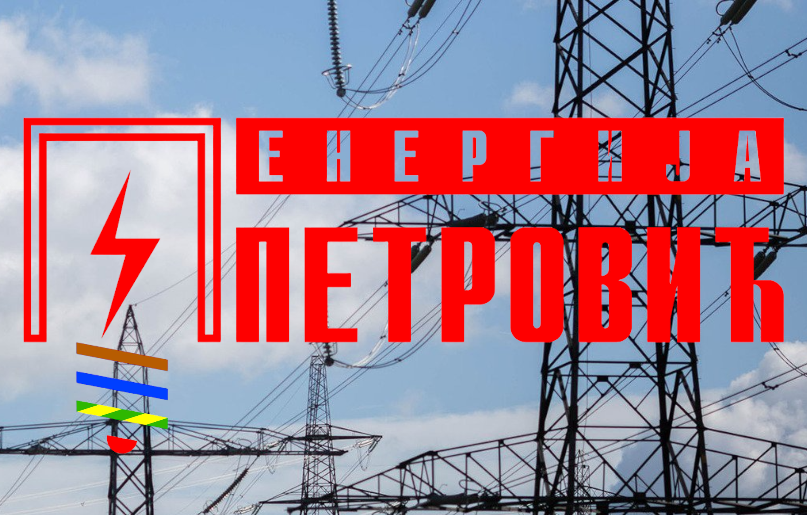

Вршимо сервис и одржавање погона и опреме на дужи временски
период
Постављање комплетне електроинсталације у објекте у изградњи
или објекте у реконструкцији од почетних радова на објекту,
довођења струје на градилиште , све до финалних радова и
постављања галантерије.
Партнери

Енергија Петровић је оснвана 2021. године. Основна
делатност је извођење електро радова у електроенергетским и
индустријским објектима, аутоматизација машина, линија и процеса, израда
ормана, електромотроних погона и др.
Енергија Петровић Вам нуди све врсте услуга, везаних за
електро радове у које спадају монтажа, сервис, одржавање и уградња
кућних апарата, као и постављање електро инсталације. Приликом израде и
одржавања сопствених електро инсталација потребно је да посебну пажњу
обратите на избор стручног, квалификованог и професионалног електричара.
Свакодневно се сусрећете са највидљивијим електричарским активностима
попут кућне инсталације и разних апарата. Израду кућне инсталације треба
да ради стручна особа, то јест професионални електричар, ради
безбедности и сигурности. Вероватно сте упознати са опасностима које
могу настати због неправилно постављене или одржаване електро
инсталације. Могућност избијања пожара или струјни удар су неке одњих.
Зато посао око било којих eлектричарских радова поверите најбољима.
Енергија Петровић је сервис који у свом тиму има
искусне и школоване електричаре који обављају све врсте електро поправки
и услуга, као и замену или доградњу комплетне електроинсталације.
Довољно је да нас позовете и наши мајстори ће у договорено време бити на
Вашој адреси, детектовати и отклонити квар, брзо и стручно.
Поред Тополе, отворени смо за сарадњу на целој територији Републике Србије као и иностранству.
Информације
Назив: Владимир Петровић пр поправка електричне
опреме Енергија Петровић Војковци